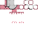

Solução Tecnologias

Headset Gamer Fallen Morcego
A inspiração no jogo é o que nos motiva e o reconhecimento vem quando a nossa comunidade de fãs Brasileiros participam dando o nome do nosso primeiro Headset! O Headset Morcego, vem com alto-falantes de alta qualidade e Surround Virtual 7.1, proporcionando uma experiência única ao jogador. É a imersão ao jogo em um novo patamar.G-Pro Superlight
Remova todos os obstáculos para vencer com nosso mouse PRO mais leve e rápido de todos os tempos. A nova arma perfeita para os melhores profissionais do mundo,que pesa menos de 63 gramas e proporciona deslizamento quase sem nenhum atrito. O PRO X SUPERLIGHT dá prosseguimento à nossa filosofia de design com ZERØ OPOSIÇÃO
— nosso compromisso de remover todos os obstáculos para criar a conexão mais real possível entre o jogador e o jogo.
FifineK658
A cápsula dinâmica do K658 possui taxa de amostragem de 16 bits e 48kHz de resposta de frequência, melhorando a inteligibilidade das vozes, a profundidadee os detalhes, garantindo a qualidade de áudio. O padrão polar cardióide mantém a sua voz no centro e minimiza o ruído ambiente captado. Ainda funciona bem
para falar em ambientes sem tratamento acústico.